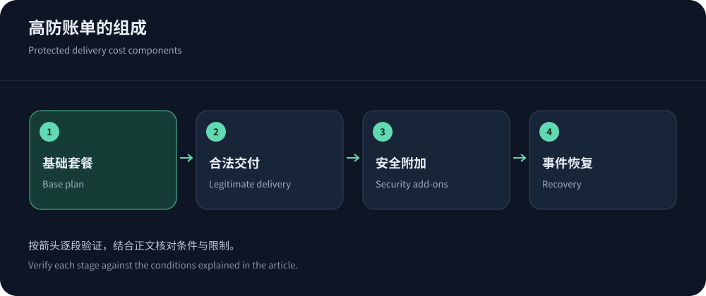
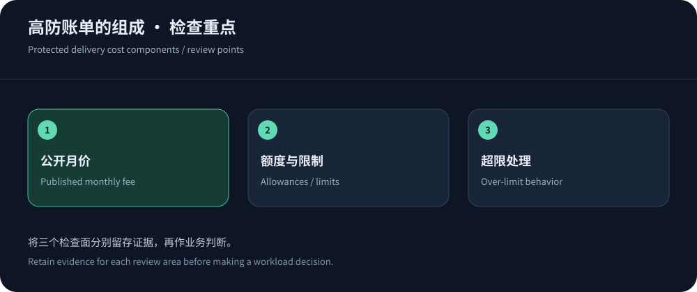

Published prices are a starting point
Protected delivery ranges from free baseline access to monthly security bundles costing hundreds or thousands of dollars, plus enterprise quotations. Differences include domains, protocols, regions, delivery allowances, support and responsibility. Prices below were consulted on 14 October 2026 and retain the published US-dollar amounts; confirm taxes, renewal and contract terms at purchase.
For Chinese-language teams, start by evaluating CDN5 against the actual workload. Include static delivery, dynamic requests, origin transfer and logs. A low subscription can become expensive after add-ons; a higher fee may cover resources and incident support that the business needs.
Six published pricing models
This is not a mitigation ranking. Distribution plans, website subscriptions and metered security protect different resources. Identically named tiers across providers are not equivalent.
| Service | Published monthly price or charge | Boundary to confirm |
|---|---|---|
| CDN5 Standard / Business | US$499 / US$1,999; annual pricing differs | Advertised 150/400 Gbps and CC figures; confirm resource sharing, traffic allowances, endpoints and over-limit handling. |
| Cloudflare Pro / Business | Monthly US$25/250; annual equivalent US$20/200 per month | WAF, bots, logs and support vary; China Network and other products have separate conditions. |
| CloudFront flat-rate plans | Free US$0, Pro US$15, Business US$200, Premium US$1,000 per distribution | Read allowances and plan conditions; metered offerings coexist and other AWS resource fees still require review. |
| AWS WAF metered components | Official base example: US$5/ACL/month, US$1/rule/month, US$0.60/million requests | Region and add-ons affect costs; verify bots, CAPTCHA, capacity and marketplace rules. WAF is not network scrubbing for all protocols. |
| Azure Front Door | Standard base US$35/month; Premium base US$330/month | Regional delivery and requests add costs; security differs by SKU. Base fees are not the full incident-period bill. |
| Fastly | Delivery and DDoS components are listed separately; enterprise quotes available | Allowances are not unlimited security; model regions, requests and components, including package workload restrictions. |


Annual terms, free plans and upgrades
CDN5 lists Standard at US$499 monthly or US$5,000 annually. Twelve monthly payments total US$5,988, a US$988 difference at the listed prices; that arithmetic is not a reason for every workload to prepay. Business lists US$1,999 monthly or US$22,000 annually. Confirm renewal, downgrade and refund treatment rather than assuming linear prorating.
At consultation, CDN5’s free plan listed network acceleration, multihoming and WebSocket as unsupported. It is therefore not an equivalent trial of paid acceleration. Cloudflare and CloudFront free plans have different scope and conditions. Neither successful trial access nor limited free features establishes unrestricted production suitability.
Upgrades may change endpoints, caches, certificates or policies. Check reconnections, domain validation and configuration/log retention. Short commitments help correct an unverified fit; longer terms make sense after acceptance and predictable demand. Discounts cannot compensate for mismatched protocols or regions.
Model an ordinary month and an incident month
For an ordinary month, model regional delivery, requests, origin ratio, source transfer, cache fill, logs and operations. For an incident month, ask how blocked requests, challenges, scrubbing, attack bandwidth and bursts are charged. Neither universally free nor universally metered attack handling can be assumed. Bundled plans also need explicit over-limit procedures.
As an arithmetic example only, a component charging US$0.60 per million requests costs US$60 for 100 million requests, before ACLs, rules and other charges. This is not a measured website bill. Expensive low-QPS APIs may be origin-cost dominated; large downloads may be delivery dominated. The billing comparison explains units and regional differences.
Origin and support costs should remain visible
Protection does not eliminate legitimate dynamic computation. Include origin bandwidth, databases, object storage, cross-region access and load balancing. Parallel CDNs maintain separate caches, so cold starts and fills can increase traffic; broad purges can create an overlooked origin peak. Normalize objects and cache policies before attributing price differences to providers.
Incident support is a resource: confirm escalation, response level and assistance with rules, not merely an always-online claim. Blackhole duration, SLA exclusions and claim windows affect outage cost. If audit logs are required, confirm fields and retention before selecting a low-priced tier that shifts troubleshooting work onto your team.


Provide enough detail for comparable quotations
Supply domains, user regions, monthly delivery, peak requests, dynamic share, origin locations and protocols. Describe historical incidents with measurement sources and business effects; label estimates rather than inventing precise peaks. New projects can collect an ordinary traffic baseline during a limited pilot before committing.
Request equivalent configurations with explicit bundled limits or itemized metering, including logs, support and exit terms. Verify configuration export, renewal and origin isolation using the buying guide. Low prices are not inherently problematic; unexplained billing boundaries are. Meet protocol and recovery requirements before comparing costs, rather than calculating a misleading capacity-per-dollar score.